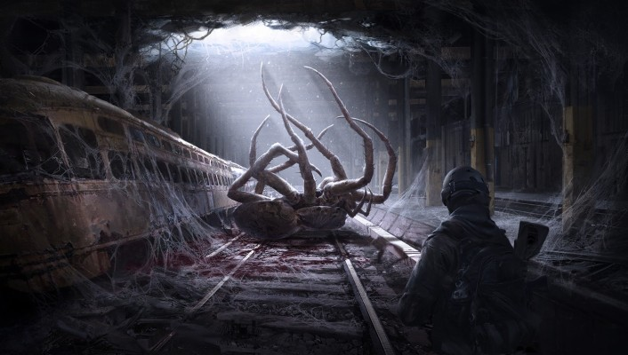
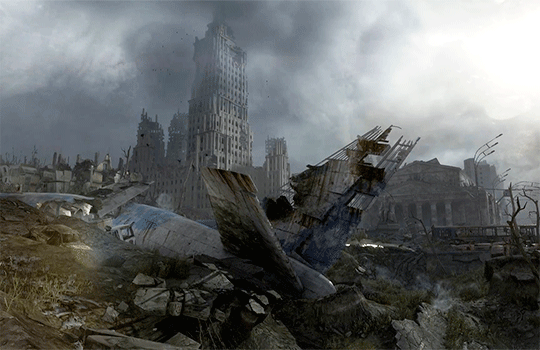
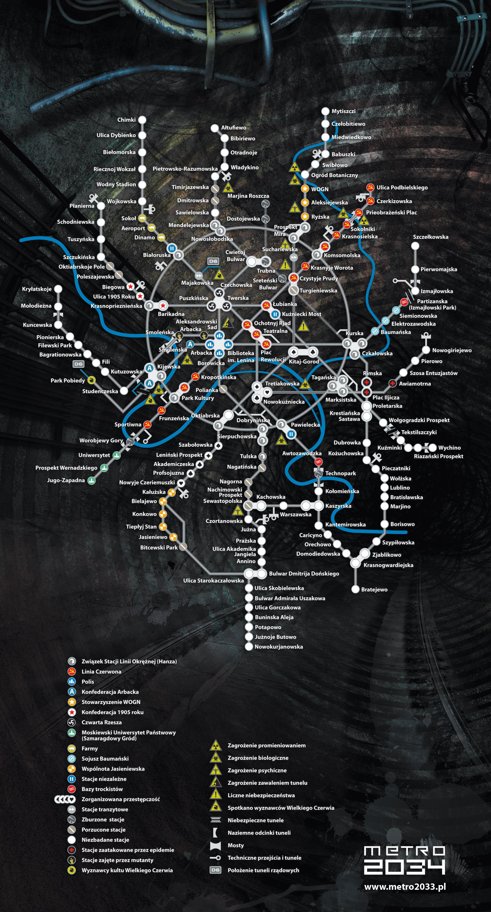
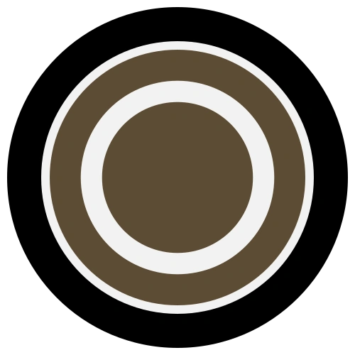
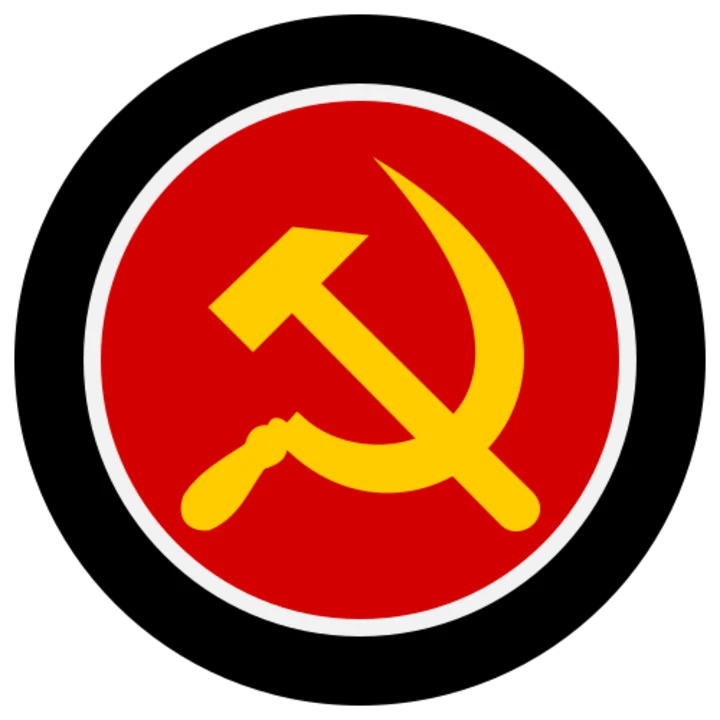
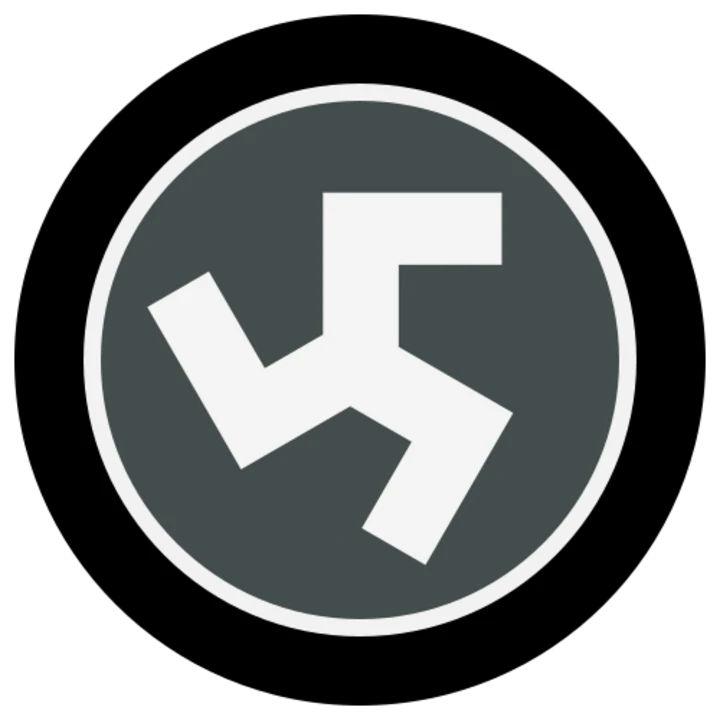

Metro 2033 es una novela posapocalíptica escrita por Dmitri Glujovski ambientada en el Metro de Moscú donde los supervivientes se ocultan después de una guerra nuclear.
Se publicó por primera vez en 2005 en Rusia. La novela ha servido de inspiración a miles de historias, decenas de libros y varios videojuegos

¿De que trata Metro 2033?
En 2013 hay una guerra nuclear y la población superviviente de Moscú decide resguardarse en el subsuelo, dentro de metro moscovita distribuyéndose por los kilómetros de estaciones y túneles. Cada estación se ha organizado socialmente con diferentes estructuras de poder como ciudades estado y se mantiene un cierto orden con diferentes alianzas entre ellas.
Surgen diferentes grupos o facciones, "Guardianes del Orden", la facción comunista de la "Línea Roja" o los neonazis del Cuarto Reich. En el centro se encuentra la Polis, la cual está formada por cuatro estaciones consideradas la "arteria principal" por su localización y enlaces con otras líneas, y la Hansa, la cual controla las principales estaciones de la Línea Circular y su economía.

A medida que estas "Estaciones Estado" se desarrollan, surgen los conflictos entre otras como la Línea Roja y el Cuarto Reich, los cuales buscan imponer su supremacía sobre el otro sin importar el coste, incluyendo las otras estaciones que buscan mantenerse neutrales, algunas son demolidas y otras pretenden unirse a la Hansa. Otras tantas deben hacer frente al problema de la superficie, de la cual proceden varios animales mutados por la radiación y que acechan por todas partes a sus presas, en este caso: humanos. Otros peligros son un grupo de mutantes conocidos como "Oscuros" o "Negros". Son humanos que tras ser expuestos a la radiación a largo plazo, su piel se oscurece y desarrollan mutaciones además de la aparente habilidad para manipular la mente de los supervivientes del metro.
Los stalkers (en ruso: сталкеры ) son arriesgados aventureros que a veces suben a la ciudad destruida en busca de objetos útiles como comida, armas o medicamentos y venderlos por balas fabricadas antes de la guerra o intercambiarlos por otros objetos.
Si bien es cierto que la mayor parte de la red metropolitana está controlada por estas mencionadas facciones, otras tantas estaciones, las que no han sido abandonadas o destruidas, forman alianzas independientes, siendo VDNJ, una de ellas y en la que empieza la historia.
Las facciones
En el universo de metro tras las bombas se dividio la gente creando asi las facciones, existen muchas mas facciones pero solo se debe destacar las 4 mas importantes (aunque existen muchos mas en los libros)

La Hanza
La Commonwealth of the Stations of the Ring Line , o la Liga Hanseática (más comúnmente conocida como Hansa , Hanza o Hanse ) es una alianza comercial que comprende varias estaciones, que conforman una gran área del metro.

Desde el punto de vista económico y militar, Hansa es, sin duda, la facción más poderosa del metro de Moscú , y mantiene un control estricto de la línea de circunvalación del metro.
Polis
Polis (Полис en cirílico) es una colección de estaciones, ubicado en el corazón de la estación de Metro, y en parte por debajo de la Biblioteca Estatal de Moscú.
Linea Roja
Es una de tus alianzas por el momento, son personas muys comunistas, tienen bastante poder militar y su ideologia es bastante restringida (aunque su papel mas importarte es en metro last light)

Cuarto Reich
El Cuarto Reich es una facción neonazi extremista en el Metro de Moscú. Al igual que casi todas las facciones del metro, el Reich no apareció espontáneamente, sino que evolucionó a partir de un grupo ya existente, probablemente miembros radicales del comando central del metro o la Unidad Nacional Rusa

¿Quien es Artyom? (prologo)
Artyom es el protagonista de la novela "Metro 2033", aunque en los juegos el es protagonista de toda la trilogia.
Es un tipo veinteañero que vivio sus primeros años de vida en la superficie antes de que cayeran las bombas, vive en una de las cientos de facciones independientes llamada VDNJ, un dia como cualquier otro en metro fue reclutado por tu tutor Alex por la llegada de Hunter, tras verlo sufren un ataque de unos mutantes llamados los nosalis gracias a una nueva amenaza que llego en el metro llamados los oscuros, tambien bautizados como homo-novus que seria la evolucion del homo-sapiens, tras esto hunter le encarga la mision a artyom de llevar su medallon a la polis para permitir dar la señal de bombardear el nido de los oscuros en el caso de no volver y aqui es donde empieza la aventura de artyom.
Artyom tras pasar muchas cosas logra llegar al punto donde se lanzaran las bombas y este lograr tirar las bombas, sin embargo tras su aventura se dedico a pensar si lo que hizo estuvo bien o acaba de cometer el peor error de su vida tras esas bombas